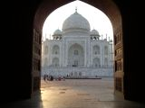
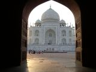

Around The World 2008 – Part 1
In February 2008 we set off on another adventure. Our first stop was Delhi to join a small group traveling through India and then on to Nepal.
Before the tour started properly we managed to meet up with Murdoch Frazer, a friend from Fairford, who kindly treated us to dinner in )one of the poshest hotels in town! He even took us back to our hotel in his chauffeured car (certainly better than our Metro train ride into the hotel).
The next day was the formal start of our trip with a day sightseeing in Old and New Delhi. Our first stop was the Red Fort a massive red sandstone construction with many buildings and former palaces as well as a building that housed a large gold statue of a peacock encrusted with many precious stones and had originally included the Kohinoor diamond (until it was taken by the Persians). From there we took a cycle rickshaw through the ‘moonlit market’ to the largest mosque in India. The ride was fascinating with all the traffic and so many people to contend with as we weaved down tiny little alleyways. It was a Sunday and most of the shops were closed so goodness knows what it would have been like on any other day of the week. The Jama Masjid mosque can accommodate 20,000 people for prayers although up to 50,000 have crowded the mosque and surrounding streets. We then travelled through a meat market and the ‘thieves market’ and then into wide and green areas of the city to a large park containing a marble memorial on the spot where Mahatma Gandhi was cremated. In another park we saw hundreds of people in cricket whites all playing cricket – there were too many pitches to count. After a delightful curry lunch we headed for the Utub complex where we saw the highest minaret in India (72.4m high and 14.6 m diameter at the base). And then to the Humayun Tomb set in beautiful grounds. Known as the poor man’s Taj Mahal, I don’t know about the poor bit as it was a very beautiful building.
Traffic in Delhi was unbelievable but all public transport, including tuk tuks, are powered by Compressed Natural Gas and so pollution is considerably reduced. Hawkers were everywhere and it proved almost impossible to persuade the tuk tuk drivers that you only wanted to go to your destination and not to an uncle’s shop.
The next day we took an early morning train to Jaipur. The journey was great with good views of the countryside and a continual supply of refreshments some of which were more appetizing than others! In the next few days we travelled by bus, horse cart, cycle rickshaw, tuk tuk and car covering many miles slowly (5 hours for 180km on one day).
 On arrival in Jaipur we were taken to our hotel – wow a four poster bed in a large room with a big balcony to sit out on and watch the world go by. Not that we had much time to do that as we spent the afternoon visiting the astronomical observatory dating from 1727. It was quite amazing the accuracy that they managed to achieve – what brilliant mathematicians and craftsmen. Before returning to the hotel we visited the Maharajah’s palace (part of which is still inhabited) the scale of these buildings is difficult to comprehend unless you have visited but, as an indication, the women’s area of the palace had 900 windows for women to look through without being seen. The journey back to the hotel took ages through incredibly
On arrival in Jaipur we were taken to our hotel – wow a four poster bed in a large room with a big balcony to sit out on and watch the world go by. Not that we had much time to do that as we spent the afternoon visiting the astronomical observatory dating from 1727. It was quite amazing the accuracy that they managed to achieve – what brilliant mathematicians and craftsmen. Before returning to the hotel we visited the Maharajah’s palace (part of which is still inhabited) the scale of these buildings is difficult to comprehend unless you have visited but, as an indication, the women’s area of the palace had 900 windows for women to look through without being seen. The journey back to the hotel took ages through incredibly  congested streets with people clinging on to every possible part of busses and trucks. We even saw some children playing cricket on a first floor balcony. That night we had dinner at the roof top restaurant of the hotel with dancing, puppets and really gorgeous food which set us up well for a visit to the Amber Fort the next morning. Impressive or what! standing high on a hill it was a massive construction. In fact there were 3 forts all connected by miles of underground tunnels.
congested streets with people clinging on to every possible part of busses and trucks. We even saw some children playing cricket on a first floor balcony. That night we had dinner at the roof top restaurant of the hotel with dancing, puppets and really gorgeous food which set us up well for a visit to the Amber Fort the next morning. Impressive or what! standing high on a hill it was a massive construction. In fact there were 3 forts all connected by miles of underground tunnels.
.
From Jaipur we travelled to Agra via an overnight stop in a little village near Bharatpur a UNESCO World Heritage bird watching wetland sanctuary. Not so many bird species because of several years of drought but still many birds and animals to see. We also saw peacocks roosting in trees back at our hotel – now that was a sight to be believed.
.
Our next stop was Agra and after the Red Fort we approached the Taj Mahal.  

There is little to say about the Taj Mahal except that it is more beautiful in reality than any picture can show. As we got closer to the building and walked around the complex, we were both enthralled and marveled at the colour, quality of workmanship and the symmetry. No more words – they cannot explain it!
In terms of towns Jaipur and Agra were amazing but the jewel in the crown for us was the village of Orchha.
After a long and dusty bus ride from Agra we came over a hill to see a number of temples and palaces spread before us. Reminiscent of Siem Reap in Cambodia, the tranquility, beauty and absence of crowds and hawkers (as a Hindu religious place the number of hawkers was 0 as opposed to 1000s everywhere else) combined to make it a very special place. The browns of the buildings contrasted greatly against the vibrant colours of paints available in the market.

From Orchha we took a short flight to Varanasi where we were fortunate enough to witness the dawn bathing ceremony in the Ganges and the dusk Hindu rituals. Both were very moving events – the morning one was almost silent whereas the evening rituals were accompanied by a cacophony of bells, horns, a drum and chanting.
So our time in India came to an end but what fantastic memories – the sights, the sounds, the smells but above all the people. We also enjoyed some lovely Indian food and managed to avoid any tummy upsets! – A very memorable time. Click here to see some more photos of India
From Varanasi, we moved into Nepal without incident although it was a very long and bumpy journey to Lumbini the birth place of Buddha. We visited the site with a guide who knew as little as we did!! and then travelled to the Chitwan National Park and a jungle resort on a 45sq km island. We crossed to the resort in a small boat powered by two men with long poles. Our luggage went in another boat but everything arrived safely. It was a bit like a PGL holiday we were organised to go on several 90 minute walks to look for tiger (fat chance as there are only thought to be 3 on the island), the single horned rhino, sloth and bear. We were given instructions on what to do if we met any of them (including hiding behind a big tree for a charging rhino and standing in a group singing and waving our hands in the case of a bear). Our first 2 walks revealed a couple of deer but nothing else. Next morning a 90 minute ride on an elephant revealed 2 separate rhino one of which was recognized as a very dangerous male. Fortunately, it treated the elephant with disdain and we were able to get up close for some good photographs. In the evening we went on another walk got close to a couple of bears. We could hear them but they ran away before we could actually see them!! Walking on, we saw two different types of crocodile one of which was very large and not the sort of beast I would wish to encounter close up. Having walked for quite some way we were pleased that the return journey was a very pleasant boat ride just as the sun was setting (magic).
After leaving Chitwan we crossed back over the river by boat to rejoin our bus and journey to Pokhara. For those who have been to Cusco, Pokhara is just like it in the sense that it is a backpackers resting place with every facility they could want.
 After a great stay in Pokhara we travelled to Kathmandu through really beautiful mountain valleys.
After a great stay in Pokhara we travelled to Kathmandu through really beautiful mountain valleys.
Unfortunately for us, mist remained and we could not see the mountain tops. That was so disappointing as we couldn’t really appreciate the majesty of the mountains. However, we arrived on the outskirts of Kathmandu to be faced with massive traffic jams dirt and a lot of squalor. Over the next couple of days we discovered that Kathmandu is a city of contrasts – great poverty and wealth with clear demarcation between the areas. Almost before we arrived at our hotel we were whisked off for a tour of the centre of the city.
Unfortunately in the haste we did not put any waterproofs into our day bags and for the first time on this trip the heavens opened. Apart from getting quite wet, the rain and dusk certainly took away the grandness of the many old temples and buildings. After a very spicy meal!!!!!! and a couple of beers and a good night’s sleep we were restored and ready for a full days sightseeing of several of the old cities that now form part of greater Kathmandu.
This time the weather was good and we really enjoyed the different sites although towards the end our guide, who was very enthusiastic and proud of his city, found it difficult to accept that our brains couldn’t take in yet another set of dates and names. Apart from the temples and monuments,we also visited Passu Patinats, or the cremation sites. Despite the smell and acrid smoke, the cremations were a very dignified way to dispose of the earthly body.
If we learned anything from our short time in Kathmandu it was that you needed a lot more time to take in everything the city has to offer. Overall, Nepal surprised us. We travelled on relatively good roads most of the time but did get stopped once at a Maoist rebel road block and soon afterwards passed two trucks that had been blown up! We experienced numerous power cuts because of strikes and got quite nifty with finding the candles that were in each and every hotel room. Nepal is a beautiful country with a lot to offer we were just a little disappointed that the mist prevented us seeing the full glory of the mountains.
Click here to see some more photos of Nepal.
And so our trip to India and Nepal came to an end as we boarded a flight to Bangkok and an overnight stay before going on to Melbourne the next day. In Melbourne and were greeted by our friends from our 2006 South America trip – Nick and Suzanne and whisked back to their home.
The next day, being Friday, Nick and Suzanne were working so we enjoyed a lazy day visiting Melbourne. What a lovely clean city with wide roads and a very efficient and reasonably priced public transport system. That evening, once Nick and Suzanne had finished work, we all went out for dinner and, for us, the first wine for 3 weeks! We had a lazy Saturday including a trip to see the house that Nick and Suzanne are buying and en route passed the Ramsey street Set for Neighbours! The weather was hot (30+ C) during the day bit cooled by the evening when Nick laid on the Aussie BBQ he promised me when we were in South America. Nick’s parents joined us and we had a very pleasant evening which went on til quite late!
Following a lazy and very enjoyable weekend with Nick and Suzanne we flew to Launceston in Tasmania, picked up a hire car and set off to enjoy the island.
Tasmania is beautiful and (apart from the few major towns) very sparsely populated. So we enjoyed empty roads and driving at a very leisurely pace to enjoy the scenery. It was a good job we had booked our car hire and accommodation as there were quite a few disappointed tourists around! Our first night was spent at the Foxhunters Return a lovely hotel in Campbell Town. We certainly struck lucky with the accommodation and the fact that they served a fantastic evening menu. In Campbell Town it was easy to understand the scale of the penal colonies and the harshness of the regimes – set in the pavement of the main road were hundreds of bricks each one inscribed with details of a convict who had worked on the Campbell Town Bridge. When you looked at the offences and the punishments awarded, wrongdoers today just don’t know how lucky they are.
We then drove down the eastern coast stopping to enjoy the beauty and solitude on many occasions before reaching The Port Arthur complex was quite a sight. It was hard to realise the history behind the penal colony and the harshness of the life that convicts and staff had to endure. From there we headed to Richmond a colonial town with many old buildings and a pleasant location. We also visited Hobart and a lovely town in the North called Deloraine. It took some time  to get used to towns and villages with names of large British towns but by the end of our short stay we were immersed back in an England of twenty years ago – relaxed pace of life, empty roads, people prepared to pass the time of day with you etc etc. On a culinary note, if you like scallops then Tasmania is a must for you.- as a local sea food crop they are relatively cheap and a curried scallop pie (with the corals still on) was only just over £1!!
to get used to towns and villages with names of large British towns but by the end of our short stay we were immersed back in an England of twenty years ago – relaxed pace of life, empty roads, people prepared to pass the time of day with you etc etc. On a culinary note, if you like scallops then Tasmania is a must for you.- as a local sea food crop they are relatively cheap and a curried scallop pie (with the corals still on) was only just over £1!!
We returned to Melbourne on Friday evening and spent the Saturday exploring Puffing Billy with Nick and Suzanne, Gerry was in seventh heaven.

Click here to see some more photos of our time in Australia
Very early the next morning Nick and Suzanne took us to the airport for the next leg of our trip. They are fantastic and generous hosts and we certainly hope to repay their hospitality when they next visit England.
Our journey to New Zealand went smoothly and we were met by our friend Penny (from our South American trip) at Christchurch airport. She whisked us off to her house a few miles from the airport and we spent the rest of the day catching up with each other’s news. We had not seen Penny since we were in Santiago 2 years ago but it seemed like only yesterday that we were all on our South American truck holiday. Penny had taken a week’s holiday so that she could travel with us and had also organised accommodation – such a pleasure for us that we did not have to think about anything!!
We spent the first day travelling to Penny’s mum’s home in Reefton. This is a lovely little town that most tourists would simply pass through which is a shame as we thoroughly enjoyed our stay and typical New Zealand hospitality. The next day we headed up to Marahau and 3 days in a cabin at a lovely campsite close to the sea. The weather was superb and we enjoyed walking in the Abel Tasman National Park. For one walk we took an aqua taxi from the campsite up the coast and then walked back. It did seem odd getting into a boat on a trailer and being towed along the road to be launched into the sea. Great fun! We also went to Farewell Spit and had a lovely walk through some hills and sand dunes to a deserted beach with just a couple of other tourists as well as 2 seals sleeping under a large overhanging rock. The next day we travelled to Nelson where Penny took us to a museum called the World of Wearable Arts. This was the sort of place that Gerry would never have gone into. However, they had a collection of Classic Cars which kept him interested for the best part of an hour and then he went into the wearable arts displays. He was as mesmerised as the girls – if you ever visit Nelson you should visit. From Nelson we travelled along the Marlborough Sound coast road to Picton- an experience well worth doing as the scenery was brilliant to Picton. After lunch we drove on down to Kaikoura and a complete change in the scenery. The north east corner of South Island has been suffering a terrible drought and we found it quite hard to comprehend after the lush green of the West coast. The fields and hill sides were as barren and brown as we would expect in the Californian desert. Cattle and sheep were really suffering as there was simply no pasture for grazing and feed was having to be transported in.
On Easter Sunday we headed back to Christchurch where we said goodbye to Penny and boarded our aircraft for Auckland. In Auckland we had an hour and a half to wait before the long leg to Los Angeles where we still arrived 6 hours before we had left New Zealand! Click here to see some more photos of our time in New Zealand.
The final leg of our journey was to go through immigration, retrieve our bags, go through customs and then hand the bags back in and board the aircraft for our short flight to Palm Springs. Having managed the admin we were then advised that our flight was delayed by an hour for technical reasons!!. Ready to collapse when we got to Palm Springs airport, we were dismayed to find that our bags had not made it and the car hire company had run out of cars. That said it only took about 30 minutes to report our bags and for a car to arrive from the downtown depot.
It seemed like going home as we entered Ocotillo Lodge and were greeted by quite a few of our friends who were having an Easter Party. We quickly settled in and then went and did some shopping by which time one of the bags had arrived at the airport and the second came in a couple of hours later. So having collected the bags we really enjoyed a glass of wine and a Pizza before retiring for the night and contemplating what a few weeks travelling we had had.